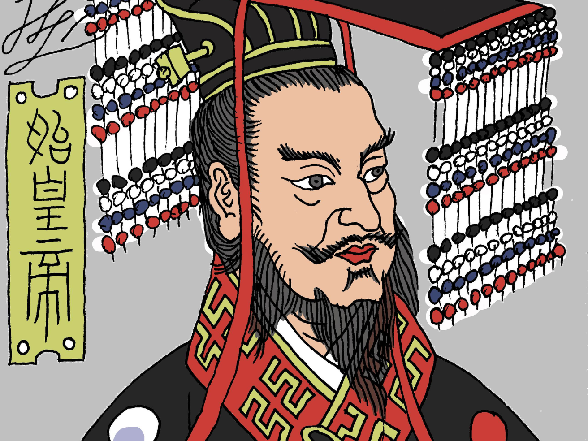

Qin Shi Huang was the first emperor of a unified China and he didn't want to depart from his kingdom, he would be the emperor who tried to outrun death.
He unified the warring states of China into a single empire, standardised its currency and writing system, and executed scholars and burned books to keep it under control. Thousands died building the Great Wall alone.
Assassination attempts in his early reign had planted the seed. One had gotten close enough to almost hit Huang with a poisoned dagger. He became suspicious and reclusive, sleeping in different rooms each night in the hope that no assassin could ever predict where he'd be.
As he grew old, the fear of assassins became a fear of death itself.
The pursuit of immortality became his next obsession; to find the mythical elixir of eternal life. Huang sent out hundreds of young men and women across his empire and beyond to search for this mythical potion.
The most famous expedition leader, Xu Fu, sailed east and never returned.
In his kingdom, Huang had alchemists preparing various potions and formulas they claimed would grant him immortality. Many of these alchemists used mercury which at the time was believed to have life-extending properties. Many historians believe that chronic mercury ingestion thus contributed to his death.
Even his preparations for his death showed he couldn't let go, Huang had a tomb built which took decades and countless labourers to build; over 8,000 individually crafted soldiers, horses and chariots to protect him in the afterlife.
He died at 49, likely poisoned by his own cure and not one person in the most powerful empire on earth knew any better.